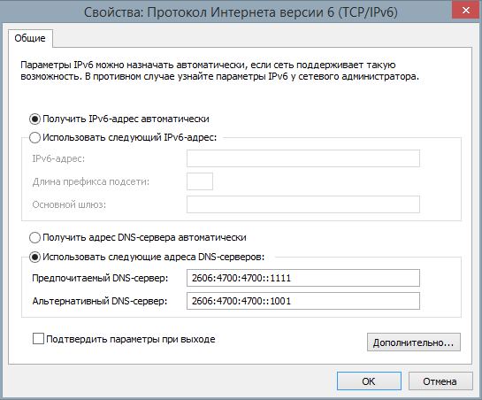

Добрый день!
Мой провайдер _DOMRU.ru фильтрует Dns (UDP 53 IPv4), но есть IPv6. Роутер ASUS настроил на использование IPv6 ( Native, DHCP-PD, Stateless, DNS ipv6 cloudflare ).
{kind=link}
Если настройки в ноутбуке установить следующим образом (DNS IPv6 от cloudflare)

то легко открываются заблокированные ресурсы у которых есть ipv6 адрес (_rutracker.org, _nnmclub.to и др).Если настройки в ноутбуке установить на автоматич. получение dns, сайты блокируется.Почему в роутере DNS IPv6 не работает?
Предполагается, что опция “Подключаться к DNS-серверу автоматически” должна быть в состоянии “Включить” (не как на скриншоте, в тексте сообщения об этом тоже не упоминается).
Вероятно, маршрутизатор пытается использовать и IPv4 DNS, и IPv6.
Как понимаю, у вас альтернативная прошивка. Установите tcpdump на маршрутизатор и посмотрите, куда маршрутизатор отправляет запросы.
Прошивка оригинальная RT-N12 VP B1.
Для меня это уже сложно.
Есть вот это
{kind=link}
И так тоже пробовал.
Как видно, запрос выполняется по IPv4.
Так и должно быть?
Обычно IPv6 имеет приоритет над IPv4. У вас в настройках где-то прописан DNS 1.1.1.1, помимо тех DNS по IPv6 на скриншоте. Попробуйте убрать все IPv4 DNS и посмотрите, что из этого выйдет.
Если убрать все DNS IPv4, то не сохраняются настройки. Значит маршрутизатор мудрит. Спасибо.
Это проблема прошивки Asus, если не всех роутеров то многих. Настройки не сохраняются, глючит DNS в целом, из-за чего часто при пользовании браузером сайты не открываются с первого раза либо останавливается загрузка рандомно, либо же все грузится но без картинок.
Вначале лечил я это на RT-AC57U я прошивкой от padawan и указанием ручных ip dns везде где можно: в DHCP, в WAN. Так же лечится с помощью openwrt (правда судя гуглу у вас там 8 mb ROM, 32 mb RAM, не знаю хватит ли).
Подозреваю что виноват встроенный dnsmasq который работает в режиме forwarder, но как его отключить полностью было лень искать, openwrt работает.
Точнее на клиентах не должно быть никаких IP адресов указанных вручную, всем должен заведовать DHCP/DHCPv6, в таком режиме все работает без проблем, разбираться опять же лень.
openwrt есть такая _http://4pda.ru/forum/index.php?showtopic=530569&st=4100#entry83841577, но там вырезан ipv6.
Роутеры не шил, боюсь.
На родной прошивке всё устраивает кроме dns ipv6.
Там же должен быть SSH, настроить можно и вручную если ничего не сохраняется.
SSH есть, а что настраивать?
Без понятия что там за линукс, никогда со стоком не работал, наверное там какой-то форк openwrt, нужно смотреть на файлы в /etc/config если такие есть.
В моей проблеме помогают 2 правила iptables:
iptables -I INPUT 2 -p udp --sport 53 -m string --hex-string ‘|05030311|’ --from 50 --to 80 --algo bm -j DROP
iptables -I INPUT 3 -p udp --sport 53 -m string --hex-string ‘|2a022698a00200010000000000030017|’ --from 50 --to 90 --algo bm -j DROP
Это напряжно для роутера или нет? Встречал информацию о -m string ,что это ресурсозатратно.
Это антиспуфинг-правила для dom.ru? Если они вам требуются, это значит, что ваши DNS-запросы всё равно анализируются оборудованием провайдера.
В вашем случае? надежнее всего будет использование DNSCrypt, DNS over TLS или DNS over HTTPS.
Да.
У меня нет задачи конфиденциальность. Хочется чтобы работало быстро, с меньшими ресурсозатратами и желательно для всех устройств. Экспериментирую пока…
И как в том же openwrt просто включить DNS over TLS? Например у Ростелекома 1.1.1.1 роутится через Лондон там что-то вроде 80 мс для Поволжья это же ад.
Хотя уже не надо. Наггулилось само сходу.